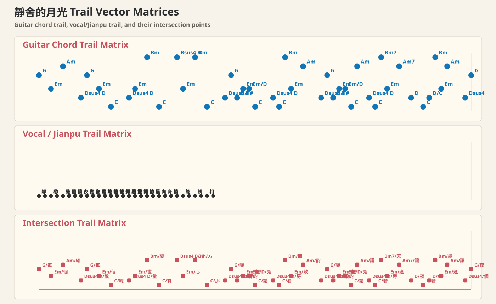

靜舍的月光
許美靜 詞：陳佳明 曲：陳佳明
- Key
- Bb
- Capo
- -
- Beat
- 4/4
前奏
| G| Em| G| Cmaj7 |
A
每顆心上某一個地方 總有個記憶揮不散
每個深夜某一個地方 總有著最深的思量
世間萬千的變幻 愛把有情的人分兩端
心若知道靈犀的方向 那怕不能夠朝夕相伴
副歌
靜舍的月光 把夢照亮 請溫暖他心房
看透了人間聚散 能不能多點快樂片段
靜舍的月光 把夢照亮 請守護它身旁
若有一天能重逢 讓幸福撒滿整個夜晚
間奏
| G| G D/F#| Em Em/D| C| D || C D/C| Bm Em| Am Bm || C D| G| G |
尾段
| G D |
若有一天 能重逢 讓幸福撒滿整個
尾奏
| G| F| G| Cmaj7| Cmaj7| G |
夜晚
